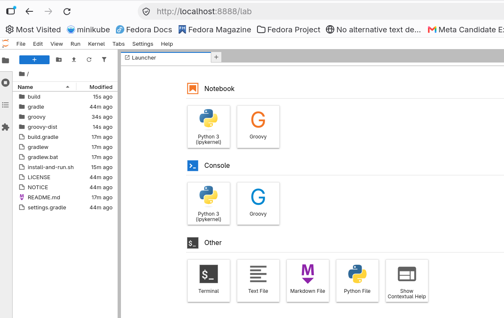
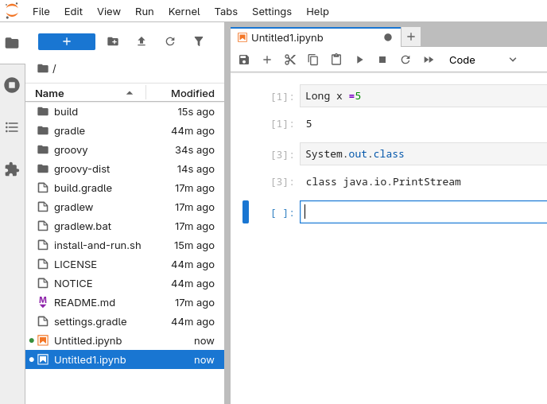

This is a fork of the beakerx_kernel_groovy project, we have freshened up the dependencies and added more internal testing to make it easier to maintain in the future.
The Bunson kernel allows you to:
- Execute Groovy code interactively in a Jupyter environment
- Use the full power of Java libraries including the Reckoning inference engine
- Visualize results directly in your notebook
- Combine AI tools with traditional JVM development workflows
We currently do not publish images to and central repositories (Python/Maven) but building from source is quick and easy.
To get started:
- Clone the Bunson Base repository
- Run ./gradlew clean install
- Clone the Bunson Goovy repository
- Customize the install_and_run.sh to pick a virtual env path.
- Execute the install_and_run.sh. Which should run the build and launch your browser!
The Bunson kernel is part of OpenJ's effort to provide practical tooling for the Java AI ecosystem, enabling seamless integration between traditional JVM development and modern AI capabilities.

